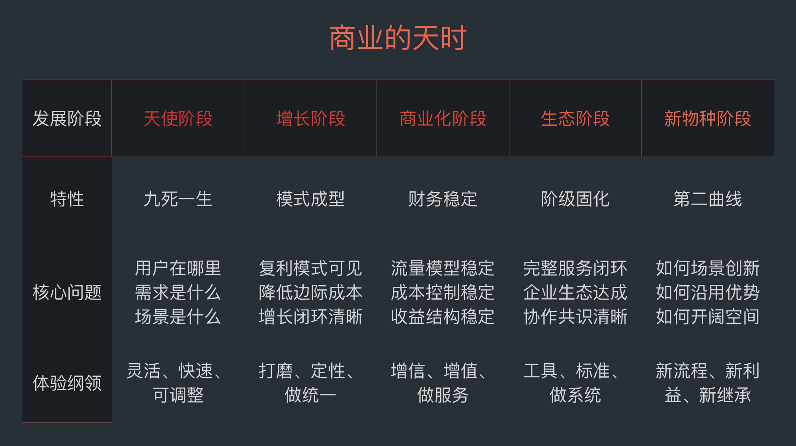

体验设计不光是满足用户的痛点和爽点，还要能根据商业化能力和市场阶段，来制定正确的策略。从商业阶段、商业化潜能、体验模型、体验进化、体验量化和组织设计的角度来搭建起体验策略的基础框架。

商业发展的本质问题：提升了什么效率、降低了什么成本、提升了什么质量、释放了什么红利、增加了什么链接。

新链接：最重要的是快和创新，并且要降低供给与需求双边运营的风险，利用链接匹配交易的杠杆效率，来迅速占领市场和进行商业化尝试。
新供给：制定长期投入的策略且不断复利积累。
新需求：执行力和中短期投入的效率。
判断商业增长可能性：
- 市场：规模与势能
- 标准化：商业化效率的尺子
- 环境成熟度：创新的垫脚石
- 价值交付：明确的价值体感
- 复利与复购场景：明确能为商业带来壁垒
- 市场地图：找到适合自己的商业地图
体验设计，需要既让用户感受良好，又要在商业价值上可持续，这是一个围绕人的平衡。
- 一纵体验分层：用户体验应该是一个公司级别的战略，它应该是所有人为之努力的对象。《用户体验要素》五个分层。战略层、资源层、能力层、场景层、感受层。
- 一循环体验循环要素：体现人、货、场的互动关系。场景力、互动力、转化力、链接力、数据力、演化力。


优秀的体验，必然是背靠商业的好设计，并随时间逐渐进化到极致：
- 商业，意味着可持续、多方的价值互惠
- 极致，必然是精巧陪聪慧的用户解决方案
- 背靠，意味着设计与商业不断地互相作用
- 进化，随着时间不断沿着互惠的逻辑成长
规划体验进化的路径：
- 确定产品的体验内核：新内核、新体验场景、新生产结构
- 基于增长策略的体验设计策略：业务的增长策略是什么？
- 利用好底层能力：抽离商业增长和能力的底层模型，用它来搭建不断强化的体验，就是体验增长的重要逻辑。底层模型，是体验设计的基础，可以扩展商业体验版图。
- 选择用户体验的进化路径：基于核心商业交付和协作的资源效率再匹配与裁剪。围绕场景的拓品类、围绕用户的生活提案、围绕业务的产业赋能、围绕物理边界进化
- 明确体验认知交付的策略：建立和用户沟通同步消息的机制


用户从来都应该是产品的一部分，甚至应该和产品是共生的关系。
- 要制定服务用户生命周期的数据标准和商业标准
- 产品总会围绕一个场景，而用户现在需要的是更轻松的生活解决方案
- 让用户每一次使用产品的行为都能够积累成信用，而企业的成长亦和用户有长期的利益共享。通过制度，让企业与用户凝结
- “用户企业”逼迫我们要做一家受人尊敬的企业，这几乎是我们现在所有商业中，最难做到的部分
- 用户和企业在一起塑造的生活共同体是什么？正确的姿势是要表达如何与用户达成令人心动的场景和状态

每个用户在使用产品的同时，都在通过这个产品发出的信号意义来获取认同，而这种认同，就是一种人生存在感的体现：成为那个我期望中的、被认可的自我。
人类大脑中有四种主要情感驱动型化学物质：内啡肽，提升人的驱动力和耐受力；多巴胺，在人完成目标后给予激励；血清素，带来骄傲和自信；后叶催产素，催生爱和善意的行为。
生物中心主义：围绕对用户的生物性进行分析，从而创造出更好的体验出来。我们应当把用户理解为一种机制，站在更高维度的一个视角去看待用户在我们创造出来的产品中的种种反应，而不是简单地用善恶好坏去加以评判。只有基于系统设计和价值平衡以及文化判断的设计，才有可能真正地解决问题，万物都是机制的平衡。

第一次使用，是用户定义一个产品的关键时刻，需要考虑：
- 用户画像：谁在使用我们的产品？
- 接触场景：在什么场景下接触到我们的产品的，是手机还是PC或是线下体验？
- 用户预期：是有目的，还是随便逛逛，或者是抱着好奇心态才进来的？
- 产品完成情况：面对不同的用户，如何让我们的产品能够最大化地达成用户预期，以此抓住用户？
- 鼓励与设计：我们如何鼓励用户向下探索，用什么价值交换的好处来让他进行下一步动作？
在关心用户生命周期的同时，要铭记：
- 用户来自不同场景：每一个产品都有不同的用户在不同的场景使用，不能一概而论
- 用户来自不同状态：有激进尝鲜的用户，有随便逛逛的小白，也有目的明确的专家，要区分运营
- 用户来自不同预期：每个用户对产品的认知都不同，要采取合适的产品设计策略去寻找最大化获取用户认知的方案

用户研究团队应该深入业务和产品团队，成为他们设计和决策的背景板。不管是什么场景，用户研究都要结合业务和产品，成为他们做用户体验决策的有力支持。
场景服务设计是指为了提高服务质量和服务提供者与客户之间的交互，对服务人员、基础设施、信息沟通和材料组成部分进行规划和组织的活动。服务设计可以是对现有的服务进行更改，也可以是创建全新的服务方式。本质上是一种资源组织和执行的系统设计，它需要根据用户的生活场景和需求，重新规划资源，来让价值交互系统运行。
- 以场景还原的方式洞察用户需求
- 搭建完整的用户旅程
- 以舞台的方式塑造用户沉浸体验
- 把服务变成故事和生活主张

精确地产生场景洞见，需要的就是构建认知用户的系统，明确用户行为的三个层次，巡查用户在场景内的行为意味着什么。
- 在场景中观察

- 和用户深谈：用户看到了什么？听到了什么？做了什么？烦恼与痛点是什么？想要的价值是什么？
- 与用户共创设计，并观察他们的真正需要：找到不同类型背景的用户；设计挑战议题，并为议题设计合适的条件；提供基础思考工具，并为工具提供足够的自由空间；合适的流程设计；总结与归纳
- 归纳研究数据并比对大数据：画像分类、机会分类、行为分类、价值观分类
痛点：就是用户刚性的需求，不满足用户想要的就是刻骨铭心的痛
爽点：就是用户的需求超预期满足的时刻，让用户得到了关键的释放
痒点：就是让用户产生渴望的撩拨，让用户看到那个理想中的自己
用户体验地图：
- 找到端到端的闭环，也就是完整地呈现用户使用产品从开始到结束的过程
- 寻找触点，包括环境触点、数字触点和人际触点
- 设计用户的情绪，即用一条曲线的升降来还原用户的情绪感受
- 大数据化用户体验地图，也就是通过数据来连接用户的行为和情绪曲线


界面设计就是为解决问题而生，而最好的功能界面体验是让用户意识不到它的存在。
- 明确刚需，界面交互体验设计是为了解决场景下的用户需求。
- 准确传递，交互设计应当正确地表达业务本身的功能、氛围，并确保信息的正确传递。
- 快捷效率，尽量减少不必要的干扰信息，让用户行使完产品价值即可离开。
- 舒适易用，保证使用的整体过程平顺、愉悦、易学习，且让用户下意识即可操作。
- 明确价值，时刻搞明白产品要带给用户什么价值。

界面设计：
- 要把种类信息模块进行合并同类项，用尽量少的形式，通过组合，自由表达出不同的产品形态，提升用户认知的效率
- 要利用视觉风格设计，最快速地让用户感受到产品的情绪、气氛、风格，识别出产品的特点，进入产品创造的故事场景当中
- 要和工程紧密贴近，提升产品迭代的效率，通过模块化的设计，让界面既统一又高效

体验设计动作：
- 功能性：什么样的界面功能会让这些人体会到特性？
- 流程性：通过体验设计的流程优化来表达特性
- 内容性：即指整个App的内容图片、方案风格的审定规则等等
- 设计性：即指App整体的图形风格以及交互动画与细节的体现
关键任务流程设计：
- 目标：即每个关键流程的达成目标是什么，以及达成目标的评判标准
- 体验地图：每一个关键任务流程的设计
- 资源配置：定义每一个关键流程需要配置的关键资源是什么，以此来估算成本（体验设计永远不要忘记成本控制和落地执行）和设计后台的配合流程
用户体验设计判断：
- 用户场景还原，无论是产品交互的流程还是页面架构，都要依据用户场景来构建和设计
- 信息交付清晰，信息在一个页面上交付的清晰度、阅读体验的节奏感，都要符合人的阅读场景和环境
- 使用流程顺畅，紧密贴合用户心智与操作习惯进行设计
- 界面模块统一，让产品界面完全模块化，并让具有相同功能的组件形式在设计上做到完全一致，以此让用户没有学习门槛
- 体验细节动人，如果能有精巧的、令人心动的小体验，让用户记忆深刻、感受良好，这会是一个产品非常打动人的地方
- 穷尽极端方案，用户在产品里的各种极端的操作方式，都不会有使用的死胡同、操作失败、流程错误等问题，我们都能给出相应的解决方案
- 符合自然习惯，所有的交互设计要符合人基本的常识、习惯和预期，不去做不必要的创新，不去做反人性的设计


我们在设计产品的时候，如果希望找到自己产品的历史文化传承，那么第一步就是找到人们过去生活中，你的产品所有触发用户高级感想象的领域。
产品的高级感：
- 寻找魅力归属
- 萃取特性符号
- 自洽的世界观
- 强化产品的稀缺性
产品的品牌，就是当我们看到它的时候，就能理解它“意味着什么”。任何体验品牌给用户心智留下的，都是一个关键定位，是那个“我想要”的冲动联想。在塑造品牌的时候，就要更加地去广告感，增强口碑传播的真实感和与用户为伍的同盟感。
文化是关系，即人与人之间的关系，文化是可以沟通和协调的。产品文化实际上就是产品和用户之间互动所产生的交流方式和习惯。
塑造产品文化最重要的手段，还是要找到产品和用户协作的那个关键场景以及场景特征，并引导用户与企业产生更多的情感交流和链接。
- 要从产品与用户协作的关键场景，来总结产品的文化是什么
- 要以提升交易效率为目标，留下有价值的产品文化
- 要为用户和产品建立更丰富表达的渠道，协助产品文化的发生
品牌IP化，就是指可以跨平台且自带温度流量的内容性品牌。
- 理解业务，找到关键场景，为品牌搭建一个生活化的舞台和故事内核
- 基于故事和剧本元素，释放到产品和营销的各个角落去
- 根据内核和用户场景，搭建用户需要的内容体系并进行传播
品牌传播：
- 从用户的场景出发，设计用户愿意主动传播的点
- 为用户设计超预期的体验，让传播自然而然地发生
- 为用户提供传播的素材和话题，让用户的自传播更容易实现
- 尽量体现产品的优势，不做无效的传播
用户同盟：
- 建立产品与用户协作的场景仪式，让用户在我们产品的场景里玩起来，让用户能够和产品产生更多的链接，为我们的产品和品牌做更多的共建
- 建立产品与用户的利益共享机制，让用户可以获得与企业进行互动的回报，从而成为利益层面的同盟
用户体验三个基础思考方式：
- 体验的思考，要在商业逻辑和用户体验中穿梭
- 任何体验，都需要努力地做好数据化与效果化
- 要努力设计理解用户的机制，与用户走得更近